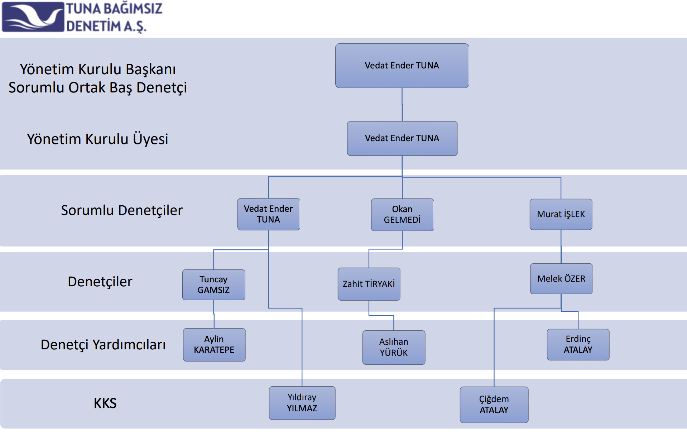

Vedat Ender Tuna
21.01.1978 Geyve Sakarya’da doğdu. Sırası ile Geyve İlk Öğretim
İlkokulu(1989), Geyve İlk Öğretim İlkokulu(1991), Geyve Lisesi(1995)’ni
başarı ile bitirdi. Sonrasında, Sakarya Üniversitesi İ.İ.B.F. İşletme
Bölümünden mezun oldu(2000). Yüksek Lisans Eğitimini Sakarya
Üniversitesi Sosyal Bilimler Enstitüsü İşletme Ana Bilim Dalı
Muhasebe-Finans Bölümünde tamamladı(2005). Doktora eğitimi Sakarya
Üniversitesi Sosyal Bilimler Enstitüsü İşletme Ana Bilim Dalı
Muhasebe-Finans bölümünde “Türkiye Finansal Raporlama Standartlarında
Mesleki Yargı Uygulaması: ISO 500 ve BIST’de Uygulaması” adlı tez
konusuyla 12.01.2015 tarihinde tamamlayarak DOKTOR ünvanını
almıştır.
2003 Temmuz ile Aralık 2013 tarihleri arasında Maliye Bakanlığında Vergi
Müfettişi olarak görev yaptı.
Mart 2011 tarihinde Yeminli Mali Müşavir ünvanını aldı.
Aralık 2013 tarihinde Bağımsız Denetçi ünvanını aldı.
Yeminli Mali Müşavir ve Bağımsız Denetçi olarak İş yaşamına devam
etmektedir. Ayrıca; mali ve finansal konularda bilirkişilik, yenilenen
mevzuat ve finansal yönetim konularında da eğitim hizmeti sunmaktadır.
2008 yılından 2013 yılına kadar Sakarya Üniversitesinde Genel Muhasebe,
Dönem Sonu Muhasebe İşlemleri, Dış Ticaret İşlemleri Muhasebesi, Mali
Analiz, Kamu Maliyesi, Vergi Uygulamaları, Türk Vergi Sistemi, Türk
Vergi Hukuku, İşletme Vergiciliği, Vergi Denetimi derslerine girmiştir.
Sakarya Serbest Muhasebeci Mali Müşavirler Odasında Staja Başlama
Kursunda Maliye ve Türk Vergi Hukuku, Türk Vergi Sistemi dersinde
eğitici olarak görev yapmaktadır. Vergi Raporu dergisinde hakemlik
yapmaktadır.
Çeşitli dergilerde muhasebe, vergi ve finans alanlarında onlarca makalesi
bulunmaktadır.
Evli olup eşi Doç. Dr. Gülfen TUNA, Sakarya Üniversitesinde İİBF ve İşletme
Fakültesinde Finans alanında Doç. Dr. olarak görev yapmaktadır.
Zeynep, Ömer Yavuz ve Cansu isimlerinde 3 çocuk sahibidir.
Hakkımızda
Şirketimiz sektör farkı gözetmeksizin bağımsız denetim, yönetim danışmanlığı, sosyal güvenlik, iş hukuku, ticaret hukuku gibi mali ve hukuki konularda mükelleflerin ihtiyaçlarını karşılamak amacıyla Maliye Bakanlığı eski Vergi Müfettişi Vedat Ender TUNA tarafından kurulan TUNA BAĞIMSIZ DENETİM A.Ş. amacı çerçevesinde Kamu Gözetimi, Muhasebe ve Denetim Standartları Kurumu’nca da yetkilendirilerek Türkiye'nin denetim şirketleri arasında yerini almaktır.
Şirket merkezimiz Sakarya’da bulunmaktadır. Şirketimiz kurucu ortağı uzun yıllar Maliye Bakanlığı’nda Vergi Müfettişi olarak çalışmış ve yine Maliye Bakanlığı’nın çeşitli birimlerinde idari kadrolarda yönetici olarak görev yapmıştır.
“En kaliteli hizmet en doğru insanla verilir.” düsturundan hareketle mesleğinin en üst seviyelerinde görev yapmış, kariyer sahibi meslek erbabı istihdam edilerek, iş sahiplerinin sorunlarının, idari ve yasal uyuşmazlıkların, görgü ve tecrübeleri ışığında çözümlenmesi vizyonuyla hareket eden şirketimizde denetim ekip sorumlularımızın tamamı yüksek öğrenim mezunu, YMM, SMMM, İç Denetçi, Eğitmen ve Bağımsız Denetim Ruhsatına haiz ve uzun yıllar denetim tecrübesine sahip personellerden oluşmaktadır.
Güvene dayanan ve etik değerlere bağlı ilişki, en iyi, pratik ve yüksek kalitede çözümler, dünya çapında hizmetler hedefliyoruz.
TUNA BAĞIMSIZ DENETİM A.Ş. ORGANİZASYON ŞEMASI

Misyon ve Vizyonumuz
Misyonumuz
Bağımsızlığı, şeffaflığı ve etik değerleri ön plana alan ulusal ve uluslararası
denetim, finansal raporlama ve eğitim standartlarına uygun faaliyet gösteren ve toplumsal
çıkarları her şeyin üstünde tutan bir anlayışla ekonomik faaliyetlerin denetimini yapmaktır.
Vizyonumuz
Bağımsız denetimin saygın, ilkeli, dinamik ve daimi bir parçası olmaktır.
Değer ve İlkelerimiz
Kurum ve kişilere en üst kalitede ve yerinde
hizmet sunmak,
Kurumsal kültürümüzün temelinde yatan,
müşterilerimizle yakın çalışarak
güvenlerini kazanmak ve işlerinin bir parçası olmak,
Müşterilerimize yüksek standartlarda günün
şartlarına uygun çözüm
önerilerini sunmak,
Seçkin ve profesyonel ekibimizin, kariyer ve
kişisel gelişimlerine
yaptığımız yatırımlarla yüksek hizmet standartlarımızın sürekliliğini sağlamak,
Sorunlara yaklaşımı ve yenilikçi çözüm
teknikleri ile çözüm odaklı
olmak,
Yüksek disiplin ve iş ahlakı ile süratli
çalışarak zamanında sunum
yapmak,
Yerel ve ulusal geniş tecrübe ve servis
çeşitliliği ile global kalite
sunmak,
Tüm çalışanlarımız olarak ortak amacımız;
müşteri odaklı, beklentilerin
ötesinde yüksek kaliteli hizmet üretmek ve sunmak ana değerlerimizdir.
Sektörler
Gayrimenkul İnşaat
Gayrimenkul İnşaat
Sağlık ve İlaç Sektörü
Hastane
Tüketim
Tüketici Ürünleri Perakende Sektörü
Turizm, Konaklama
Ulaşım, Lojistik ve Taşımacılık
Endüstri
Demir-Çelik
Akaryakıt
Süt-Gıda
Tarımsal Ürünler
Araç Alım-Satım
Endüstriyel Etiket
Demiryolu Sektörü
Savunma Sanayi Sektörü
Elektrik, Elektronik
Şeffaflık Raporu
" KAYİK kapsamında Bağımsız Denetime tabi firmamız bulunmadığından dolayı Şeffaflık Raporu düzenlenmemektedir. "